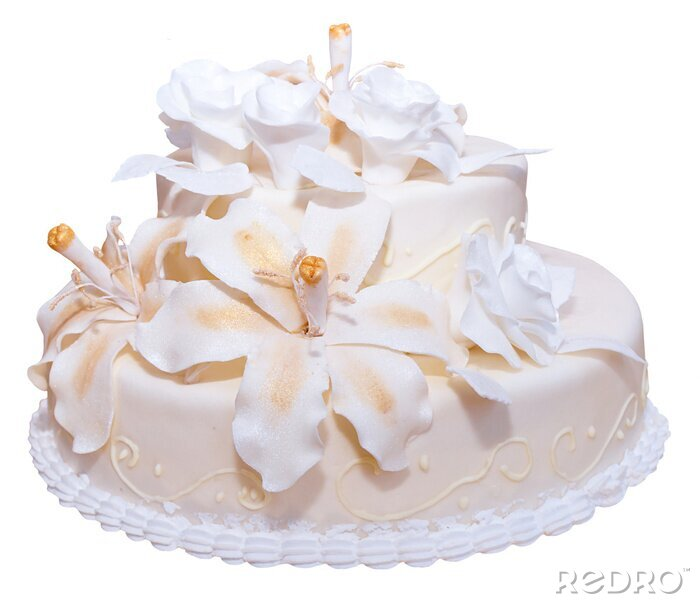

Wyborne Wypieki
Informacje
Galeria
Kontakt
Tort Kokosowy z Malinami
Delikatny tort na bazie biszkoptu kokosowego, nasączonego syropem kokosowym.
Przekładany aksamitnym kremem kokosowym z mascarpone oraz musem malinowym,
który dodaje orzeźwiającej kwaskowatości.
Warstwy kremu i malin idealnie się komponują, tworząc harmonijną kombinację smaków.
Całość pokryta lekkim kremem śmietankowo-kokosowym i udekorowana świeżymi malinami,
wiórkami kokosowymi oraz płatkami migdałów.
Tort zwieńczony subtelnymi, jadalnymi kwiatami dla eleganckiego wyglądu.
Zamów
Tort Czekoladowy z Malinami
Tort na bazie biszkoptu kakaowego, przekładany kremem czekoladowym z dodatkiem mascarpone oraz świeżymi malinami. Warstwy kremu i owoców idealnie się uzupełniają, tworząc balans słodyczy i kwaskowatości. Ozdobiony wiórkami czekolady, liofilizowanymi malinami i listkami mięty.
Zamów
Tort Waniliowy
Klasyczny tort waniliowy na puszystym, jasnym biszkopcie, nasączonym lekkim syropem waniliowym. Przekładany kremem śmietankowo-waniliowym z dodatkiem białej czekolady, co nadaje mu delikatną słodycz i aksamitną konsystencję. Warstwy kremu doskonale harmonizują z aromatem naturalnej wanilii. Całość pokryta gładką warstwą kremu maślanego o smaku waniliowym. Tort ozdobiony drobnymi perełkami cukrowymi, jadalnym złotem oraz subtelnymi różami z masy cukrowej.

Zamów
Tort "Ciasto z Minecrafta"
Tort inspirowany kultowym ciastem z gry Minecraft, na bazie jasnego biszkoptu waniliowego, nasączonego lekkim syropem mlecznym. Przekładany puszystym kremem śmietankowym oraz warstwami musu truskawkowego, co nadaje mu owocowy, orzeźwiający smak. Z wierzchu pokryty masą cukrową w charakterystycznym wzorze ciasta z gry, z kwadratowymi plamkami "polewy" i "truskawek" w czerwono-białych odcieniach, odwzorowując pikselowy styl.
Zamów
Wszystkie prawa nie zastrzeżone